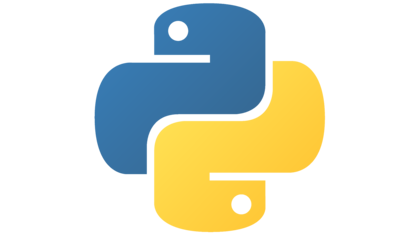
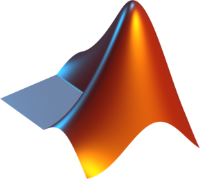
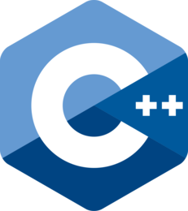
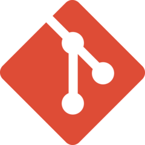
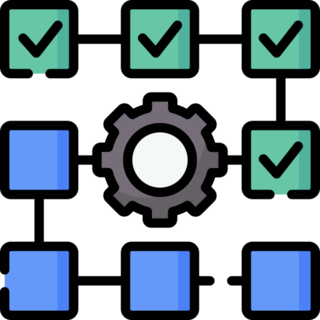

Software Engineering
Production-grade systems, validated automation, data platforms, and AI-enabled products
Software engineering experience spanning research prototypes, internal applications, clinical data systems, algorithm pipelines, quality engineering, and product-ready deployment in regulated digital-health and MedTech environments.
Programming, Data & Developer Tooling
Cross-functional Programming Languages
Primary strength in production-grade Python, supported by multidisciplinary scientific computing, systems, web, and data technologies used across clinical analytics, internal applications, automation, and model delivery.

Python
Production software, machine-learning pipelines, APIs, analytics, automation, and internal tooling.

MATLAB
Signal processing, numerical methods, simulation, prototyping, and research validation.

C / C++
Systems foundations, performance-sensitive algorithms, and engineering interoperability.
JavaScript
Interactive interfaces, dashboards, web tooling, and full-stack application foundations.
PostgreSQL & SQL
Structured data, governed persistence, metadata, analytical queries, and backend services.
Version Control

GitStructured collaboration and release control
Branching strategies, peer review, traceable verification, documented releases, and collaborative delivery across software, engineering, clinical, and research teams.
Development & Automation
Software that removes operational friction
Data-processing pipelines, specialized applications, and internal engineering toolkits standardize work, reduce manual steps, and make complex workflows easier to execute, validate, and maintain.
Software Architecture & Quality Engineering
Platform & Cloud Architecture
Platform modernization and application delivery
Clinical data platforms, new data streams, secure processing, internal applications, APIs, and cloud-connected services are engineered as maintainable systems rather than isolated scripts.
Quality Engineering, Validation & Delivery

Repeatable evidence, not one-off checks
Automated test coverage and strengthened CI/CD transform verification and validation from manual effort into repeatable, gated processes for regulated pivotal-stage programs.
Software Development Lifecycle
Clear, reusable components
Evidence at every layer
Controls by design
Knowledge that survives handoff
Repeatable builds and analyses
Metrics, logs, and feedback